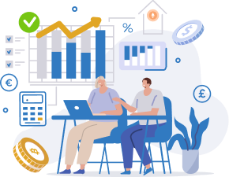

-
Le guide comparatif des meilleurs brokers du marché
Quel broker choisir ? Sur quel marché financier investir ? Quelle stratégie adopter pour réussir ? Un guide complet pour mieux comprendre le trading en ligne et rester au courant des dernières tendances des marchés financiers
- 
Meilleurs brokers à Paris
-

Avatrade est un broker CFD présent sur le marché depuis 2006. Spécialisé dans le trading CFD et trading Forex, il a su gagner le cœur des traders et s’inscrit parmi les meilleurs en la matière

-
.png)
Alvexo s’impose comme le meilleur broker du trading en ligne depuis son lancement en 2014. Sa capacité à s’adapter à tous les profils lui permet aujourd’hui d’être un incontournable pour les traders débutants comme les traders professionnels
.png)
-
.png)
Libertex est arrivé sur le marché en 1997 et compte aujourd’hui l’une des plus grandes communautés de clients. Son expérience considérable lui permet de proposer des plateformes de trading de qualité, adaptées à tous les niveaux
.png)
Suggestion d’articles
-

Apprendre le trading en ligne gratuitement
Apprendre à trader proprement, est l’objectif de tous les débutants, qui commencent à interagir avec les différentes plateformes de trading. Seulement, atteindre cet objectif peut se révéler être une tâche bien plus difficile…
-

MetaTrader 5 : avis et guide complet
Pour avoir le salaire d’un bon trader, il ne suffit pas d’apprendre à trader et d’avoir accès à des données importantes. Il faut aussi savoir choisir la meilleure plateforme de trading qui soit …
-

Quels sont les risques du trading?
Un commerçant fait face à des risques en entrant dans la spéculation sur le marché boursier. Que ce soit en termes de finances, d'escroqueries ou même de santé mentale, le trading peut être plus risqué que gratifiant…

-
.png)
Vous cherchez le courtier parfait?
Il est indispensable de connaître vos objectifs de gains pour tomber sur le courtier parfait. Trouvez en quelques clics le broker qui vous correspondra le mieux selon vos objectifs d’investissement et de votre niveau en trading en ligne.
-

En quête de plus de connaissances ?
Débutant dans le trading en ligne ou en quête de plus de performances ? Découvrez nos ressources gratuites pour obtenir tous les outils nécessaires à vos prochaines sessions de trading. Astuces, conseils et outils à disposition gratuitement.
-
.png)
Comparer les meilleurs brokers
Rien de plus efficace que de comparer les brokers qui vous intéressent. Vous pouvez les comparer au travers différentes catégories afin de savoir lequel répond vraiment à vos objectifs.
Qui sommes-nous ?
-
DigitalBusiness.fr est le site de référence qui regroupe tous les avis comparatifs de broker en ligne. Entièrement géré et rédigé par des experts du trading, ici vous ne trouverez que des informations exclusives et des analyses particulièrement poussées.
Notre objectif est de fournir un article complet, accessible et entièrement impartial pour répondre à vos questions et de vous permettre de trouver le broker qui vous correspond.
Notre site est donc l’endroit idéal pour retrouver le classement du meilleur broker en ligne de l’année, des avis fournis sur chaque site de trading disponible sur le marché et des conseils pour vous faire progresser dans le trading en ligne.
-
.png)